화공기사(구) (2014-09-20 기출문제)
1과목: 화공열역학
1. 그림에서 동력 W를 계산하는 식은?
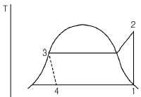
- W=(H2-H3)-(H1-H4)
- W=(H2-H3)-(H4-H1)
- W=(H1-H4)-(H2-H3)
- W=(H4-H1)-(H2-H3)
(정답률: 67%)

2. 다음 내연기관 사이클(cycle) 중 같은 조건에서 그 열 역학적 효율이 가장 큰 것은?
- 카르노 사이클(Carnot cycle)
- 오토 사이클(Otto cycle)
- 디젤 사이클(Diesel cycle)
- 사바테 사이클(Sabathe cycle)
(정답률: 81%)
3. 일정 온도에서 반데르 발스(Van der Walls) 기체를 V1으로부터 V2 로 팽창시켰다면 내부 에너지 U 의 변화는 1mol 당 얼마가 되겠는가? (단, 반데르 발스 상태방정식은 다음과 같다.)
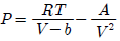
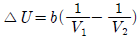
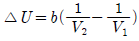
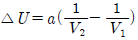
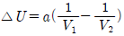
(정답률: 43%)
4. P-H선도(P-H diagram)에서 등엔트로피(Isentropic)선의 기울기에 해당하는 식은?
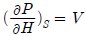
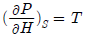
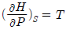
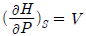
(정답률: 56%)
5. 150kPa, 300K에서 2몰 이상기체의 부피는 얼마인가?
- 0.03326m3
- 0.3326m3
- 3.326m3
- 33.26m3
(정답률: 52%)
6. 조름공정(Throtting Process)은 다음 중 어느 과정과 그 원리가 같은가?
- 정용과정
- 등온과정
- 등엔드로피과정
- 등엔탈피과정
(정답률: 65%)
7. 25℃, 10atm 에서 성분 1, 2 로 된 2성분 액체 혼합물 중 성분 1의 퓨개시티가 다음 식으로 주어진다. 성분 1에 대한 헨리(Henry) 상수는 몇 atm 인가? (단,
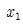
은 성분 의 몰분율이고 1 ,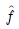
은 atm 단위를 갖는다.)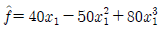
- 10
- 20
- 40
- 50
(정답률: 59%)
8. 다음 중 역행 응축(retrograde condensation)을 이용한 것은?
- 가스 같은 기체를 운반하기 위하여 가스통의 압력을 높인다.
- 지하 유정에서 가스를 끌어올 때 가벼운 가스를 다시 넣어주어 압력을 높인다.
- 먼지를 제거하기 위하여 질소를 탱크에서 분사시킨다.
- 냉매를 이용하여 공기를 냉각시켜 에어컨을 가동한다.
(정답률: 65%)
9.
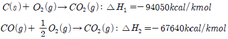
위와 같은 반응을 알고 있을 때 다음의 반응열은 얼마인가?(오류 신고가 접수된 문제입니다. 반드시 정답과 해설을 확인하시기 바랍니다.)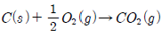
- -37025 kcal/kmol
- -26410 kcal/kmol
- -74⑤0 kcal/kmol
- +26410 kcal/kmol
(정답률: 72%)
10. 27℃, 1800atm 하에서 산소 1mol 의 부피는 약 몇 L인가? (단, 압축인자는 1.5 이다.)
- 20.5
- 0.0185
- 0.02⑤
- 0.00185
(정답률: 71%)
11. 이상기체에 대하여 Cp-Cv=nR 이 적용되는 조건은?
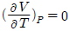
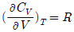
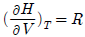
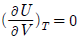
(정답률: 53%)
12. 단일 성분이 두 상으로 평형을 이룰 때 두 상의 각각의 열역학적 특성치 관계로 옳은 것은?
- 각 상의 내부에너지는 같다.
- 각 상의 자유에너지는 같다.
- 각 상의 엔탈피는 같다.
- 각 상의 일함수는 같다.
(정답률: 64%)
13. 어떤 기체의 상태방정식은 P(V-b)=RT 이다. 이 기체 1mol 이 3m3 에서 5m3 로 등온 팽창할 때 행한 일의 크기는? (단, b의 단위는 m3 이고 0 ＜ b ＜ V 이다.)
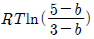
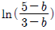
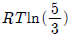
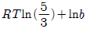
(정답률: 73%)
14. 1atm, 100℃에서 1mol 의 수증기와 물과의 내부에너지 차는 약 몇 cal 인가? (단, 수증기는 이상기체로 생각하고 주어진 압력과 온도에서 물의 증발 잠열은 539cal/g 이다.)
- 189070
- 87090
- 19110
- 8960
(정답률: 43%)
15. 물과 에탄올, 벤젠의 3성분계가 기체-액체 상평형을 이루고 있다. 자유도는 얼마인가? (단, 액상은 균일하다.)
- 1
- 2
- 3
- 4
(정답률: 69%)
16. 주울-톰슨(Joule-Thomson) 계수 μ에 대한 표현으로 옳은 것은?
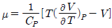
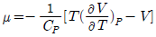
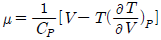
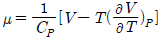
(정답률: 41%)
17. 절대온도 T 의 일정온도에서 이상기체를 1기압에서 10기압으로 가역적인 압축을 한다면, 외부가 해야 할 일의 크기는?
- RTln10
- RT2
- 9RT
- 10RT
(정답률: 75%)
18. 수용액 속에서 낮은 농도로 들어있는 성분(i)에 대하여 그 활동도(activity)
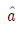
를 옳게 나타낸 것은? (단, Xi= 몰분율, ωi= 질량분율, mi= 몰랄농도(Molarity) 이다.)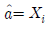
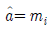
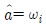
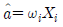
(정답률: 50%)
19. 두헴(Duhem)의 정리는 “초기에 미리 정해진 화학성분들의 주어진 질량으로 구성된 어떤 닫힌계에 대해서도, 임의의 두 개의 변수를 고정하면 평형상태는 완전히 결정된다.”라고 표현할 수 있다. 다음 중 설명이 옳지 않는 것은?
- 정해 주어야 하는 두 개의 독립변수는 세기변수일수도 있고 크기변수일수도 있다.
- 독립적인 크기변수의 수는 상률에 의해 결정 된다.
- F=1 일 때 두 변수 중 하나는 크기변수가 되어야 한다.
- F=0 일 때는 둘 모두 크기변수가 되어야 한다.
(정답률: 57%)
20. 다음 중 주울-톰슨(Joule-Thomson) 계수(μ)에 대한 설명으로 옳은 것은?
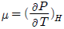
로 정의된다.- 항상 양(+)의 값을 갖는다.
- 전환점(inversion point)에서는 1 의 값을 갖는다.
- 이상기체의 경우는 값이 0 이다.
(정답률: 58%)
2과목: 단위조작 및 화학공업양론
21. 수분 40wt% 를 함유한 목재 100kg 이 건조기에서 수분 20wt% 까지 건조된다. 증발된 물의 양은 얼마인가?
- 50kg
- 40kg
- 35kg
- 25kg
(정답률: 50%)
22. 몰 조성이 79% N2 및 21% O2 인 공기가 있다. 20℃, 740mmHg에서 이 공기의 밀도는 약 몇 g/L 인가?
- 1.17
- 1.34
- 3.21
- 6.45
(정답률: 58%)
23. 과열수증기가 190℃(과열), 10 bar 에서 매시간 2000kg/h로 터빈에 공급되고 있다. 증기는 1bar 포화증기로 배출되며 터빈은 이상적으로 가동된다. 수증기의 엔탈피가 다음과 같다고 할 때 터빈의 출력은 몇 kW 인가?
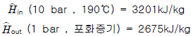
- W = -1200㎾
- W = -292㎾
- W = -130㎾
- W = -30㎾
(정답률: 50%)
24. 임계상태에 관련된 설명으로 옳지 않은 것은?
- 임계상태는 압력과 온도의 영향을 받아 기상거동과 액상거동이 동일한 상태이다.
- 임계온도 이하의 온도 및 임계압력 이상의 압력에서 기체는 응축하지 않는다.
- 임계점에서의 온도를 임계온도, 그 때의 압력을 임계 압력이라고 한다.
- 임계상태를 규정짓는 임계압력은 기상거동과 액상거동이 동일해지는 최저압력이다.
(정답률: 60%)
25. 상변화에 수반되는 열을 결정하는데 사용되는 Clausis -Clapeyron 식에 대한 설명 중 옳은 것은?
- 온도에 대한 포화증기압 도시(plot)의 최대값으로부터 잠열을 결정할 수 있다.
- 온도에 대한 포화증기압 도시(plot)의 최소값으로부터 잠열을 결정할 수 있다.
- 온도역수에 대한 포화증기압 대수치 도시(plot)의 기울기로부터 잠열을 구할 수 있다.
- 온도역수에 대한 포화증기압 대수치 도시(plot)의 절편으로부터 잠열을 구할 수 있다.
(정답률: 53%)
26. CO2 75vol% 과 NH3 25vol% 의 기체 혼합물을 KOH 로 CO2를 제거하였더니 유출가스의 조성은 25vol% CO2 이었다. CO2 제거 효율은 약 몇 % 인가? (단, NH3 의 양은 불변이다.)(오류 신고가 접수된 문제입니다. 반드시 정답과 해설을 확인하시기 바랍니다.)
- 10%
- 33%
- 67%
- 89%
(정답률: 35%)
27. NH3 가스가 3.5m3 의 용기 속에 21atm, 50℃ 로 들어있다. 이 조건에서 NH3 가스의 압축계수(compressibility factor)가 0.845 라면 용기 속에 들어 있는 NH3 의 양은 약 얼마인가?
- 18.1kg
- 21.4kg
- 47.2kg
- 55.8kg
(정답률: 48%)
28. 4HCl+O2→2H2O+2Cl2 의 반응으로 촉매 존재 하에 건조 공기로 건조 염화수소를 산화시켜 염소를 생산한다. 이때 공기를 30% 과잉으로 사용하면 반응기에 들어가는 기체 중 HCl 의 부피조성은 몇 %인가? (단, 공기 중의 산소의 부피조성이 21% 이다.)
- 35.⑤
- 39.25
- 75.54
- 80.⑤
(정답률: 32%)
29. 30wt% 의 A, 70wt% B 의 혼합물에서의 A의 몰분율은 얼마인가? (단, A 의 분자량은 60이고, B 의 분자량은 140 이다.)
- 0.3
- 0.4
- 0.5
- 0.6
(정답률: 52%)
30. 이상기체의 밀도를 옳게 설명한 것은?
- 온도에 비례한다.
- 압력에 비례한다.
- 분자량에 반비례한다.
- 이상기체 상수에 비례한다.
(정답률: 66%)
31. 노벽이 두께 25mm 의 내화벽돌과 두께 20cm 의 보통벽돌로 이루어져 있다. 내화벽돌과 보통벽돌의 열전도도는 각각 0.1kcal/mㆍhㆍ℃, 1.2kcal/mㆍhㆍ℃ 이며 노벽의 내면온도는 1000℃ 이고 외면온도는 60℃ 이다. 외부노벽으로부터의 단위면적당 열손실은 몇 kcal/m2ㆍh 인가?
- 1236
- 2256
- 3326
- 4526
(정답률: 49%)
32. 펌프의 공동현상을 방지하기 위하여 고려하여야 할 사항이 아닌 것은?
- NPSH(Net Positive Suction Head)를 크게 펌프를 설치한다.
- 유입관로에서의 유속을 작게 배관한다.
- 흡입관로에서의 손실수두를 작게 배관한다.
- 펌프의 회전수를 크게 한다.
(정답률: 50%)
33. 원관 내에 유체가 난류로 흐르고 있다. 평균유속은 0.5m/s이며, 축방향 평균제곱 편차속도는 6.35×10-4m2/s2 이다. 난류 강도는 약 몇 % 인가?
- 10
- 8
- 7
- 5
(정답률: 29%)
34. 천연가스를 상온 상압에서 150m3 /min 의 유량으로 수송한다. 이 조건에서 공정 파이프 라인(line)의 최적 유속을 1m/s 로 하려면 사용관의 직경은 약 몇 m 로 하여야 하는 가?
- 1.58
- 1.78
- 2.24
- 2.48
(정답률: 43%)
35. 저수지로부터 10m 높이의 개방탱크에 펌프로 물을 퍼올린다. 출구의 유속을 3.13m/s 로 유지한다. 유로의 마찰손실을 무시하고 온도가 일정할 때 펌프의 이론 동력은 약 몇 kgfㆍm/kg 인가?
- 10.5
- 13.1
- 14.5
- 16.3
(정답률: 39%)
36. 상계점(plait point)에 대한 설명 중 틀린 것은?
- 추출상과 추잔상의 조성이 같아지는 점
- 분배곡선과 용해도곡선과의 교점
- 임계점(critical point)으로 불리기도 하는 점
- 대응선(tie-line)의 길이가 0 이 되는 점
(정답률: 50%)
37. 최고공비혼합물에 대한 설명으로 틀린 것은?
- 휘발도가 정규상태보다 비정상적으로 높다.
- 같은 분자간 인력이 다른 분자간 인력보다 작다.
- 활동도계수가 1보다 작다.
- 증기압이 이상용액보다 작다.
(정답률: 41%)
38. 증류탑에서 환류비를 나타내는 식으로 옳지 않은 것은? (단, RD, RV 는 환류비, L 은 농축부 강하액량, D 는 탑상부 제품량, V 는 탑내 농축부 상승증기량이다.)
- RD = L/D
- RV = L/V
- RV = L/(L+D)
- RV = D/V
(정답률: 51%)
39. 주된 용도가 나머지 셋과 다른 것은?
- 피토관(pitot tube)
- 마노미터(manometer)
- 로타미터(rotameter)
- 벤츄리 미터(venturi meter)
(정답률: 32%)
40. 모세관 현상이 지배적인 다공서 고체를 건조할 때 건조속도의 특성을 나타낸 그림은?
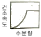
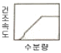
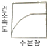
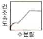
(정답률: 42%)
3과목: 공정제어
41. 시간 상수가 1분인 1차계로 표현되는 수은 온도계가 25℃의 실내에 놓여 있었다. 어느 순간 이 온도계를 5℃ 의 바깥 공기에 노출시켰다면, 약 몇 분후에 온도계 눈금이 6℃ 를 나타내겠는가?
- 1.0분
- 2.0분
- 3.0분
- 4.0분
(정답률: 36%)
42. 0 ~ 500℃ 범위의 온도를 4 - 20mA 로 전환하도록 스팬 조정이 되어 있던 온도센서에 맞추어 조율되었던 PID 제어기에 대하여, 0 ~ 250℃ 범위의 온도를 4 -20mA 로 전환하도록 온도센서의 스팬을 재조정한 경우, 제어성능을 유지하기 위하여 PID 제어기의 조율은 어떻게 바뀌어야 하는가?
- 비례이득값을 2배로 늘린다.
- 비례이득값을 1/2로 줄인다.
- 적분상수값을 1/2로 줄인다.
- 제어기 조율을 바꿀 필요없다.
(정답률: 52%)
43. 다음의 함수를 라플라스로 전환한 것으로 옳은 것은?
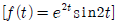
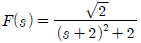
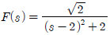
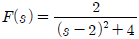
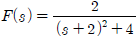
(정답률: 47%)
44. 다음 블록선도에서 전달함수
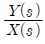
맞는 것은?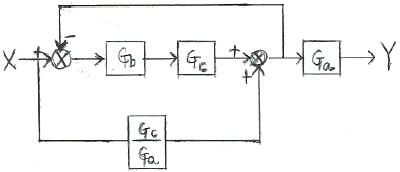
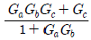
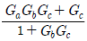
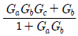
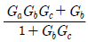
(정답률: 54%)
45. 일차계 공정에 사인파 입력이 들어갔을 때 시간이 충분히 지난 후의 출력은?
- 입력 사인파의 진폭에 공적이득을 곱한 크기의 진폭을 가지는 사인파를 보인다.
- 입력 사인파와 같은 주파수를 가지는 사인파를 보인다.
- 입력 사인파와 같은 위상을 가지는 사인파를 보인다.
- 입력 사인파의 진폭에 공정이득을 나눈 크기의 진폭을 가지는 사인파를 보인다.
(정답률: 47%)
46. 비례이득을 변화시켜 공정출력을 연속적으로 진동하게 하여 제어기를 튜닝하는 방법(continuous - cycling)에 관한 다음 설명 중 옳지 않은 것은?
- 시간지연이 없는 1차 공정에 적용이 가능하다.
- 공정에 대한 사전 지식이 없어도 된다.
- 연속진동 주기와 연속진동을 가져오는 비례이득 정보를 이용하여 제어기를 튜닝한다.
- 시간이 많이 걸리고 진동폭이 커지면 위험할 수 있기 때문에 적용할 수 없는 경우가 있다.
(정답률: 21%)
47. Disturbance(외부교란)가 시간에 따라 변화할 때 제어변수가 고정된 set point에 따르도록 조절변수를 제어하는 것을 무슨 제어라고 칭하는가?
- 조정(regulatory) 제어
- 서보(servo) 제어
- 감시제어
- 예측제어
(정답률: 53%)
48. 어떤 공정이 전달함수
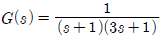
로 표현된다. 공정입력으로 sin(t)가 계속 들어갈 때 시간이 충분히 지난 후의 공정출력에 관한 설명 중 틀린 것은?- 공정출력은 공정입력과 비교해서 an-1(1)+tan-1(3)[radian] 만큼 지연되어서 나타나는 sin파이다.
- 공정출력은 진폭이 인 sin파이다.
- 공정이 안정하기 때문에 출력은 진동하면서 점점 0으로 수렴한다.
- 공정출력은 주파수(frequency)가 1인 sin파이다.
(정답률: 37%)
49. Smith predictor 는 어떠한 공정문제를 보상하기 위하여 사용되는가?
- 역응답
- 공정의 비선형
- 지연시간
- 공정의 상호간섭
(정답률: 39%)
50. 화학공장에서 공정제어의 필요성에 대한 설명으로 다음 중 가장 거리가 먼 것은?
- 균일한 제품을 생산하여 제품의 질을 향상시키기 위해 필요하다.
- 온도나 압력 등의 공정변수들을 잘 관리하여 사고를 예방하기 위해 필요하다.
- 생산비 절감 및 생산성 향상을 위해 필요하다.
- 공장운전의 완전 무인화를 위해 필요하다.
(정답률: 62%)
51. 전달함수가 인 계에서 단위 계단응답 Y(t)는?
(정답률: 36%)
52. 주파수 응답해석(frequency response analysis)에 대한 설명 중 틀린 것은?
- 사인파 형태의 공정입력이 가해졌을 경우, 공정출력의 형태를 해석한 것이다.
- 주파수 응답해석은 앞먹임 제어루프의 안정도를 해석하는 데에 주로 사용된다.
- G(s)를 전달함수로 가지는 공정의 진폭비는 lG(iω)l 이다.
- 보데선도(Bode Plot)는 주파수에 대한 공정의 진폭비와 위상각 변화를 그래프로 표시한 것이다.
(정답률: 48%)
53. 어떤 액위(liquid level) 탱크에서 유입되는 유량(m3 /min)과 탱크의 액위(h)간의 관계는 다음과 같은 전달함수로 표시된다. 탱크로 유입되는 유량에 크기 1인 계단변화가 도입되었을 때 정상상태에서 h 의 변화폭은 얼마인가?
- 1
- 2
- 3
- 6
(정답률: 37%)
54. 함수 f(t)의 Laplace 변환이 다음 식과 같을 때 함수 f(t)의 최종 값을 구하면?
- 0
- 1
- 2
- 3
(정답률: 54%)
55. 다음 중 1차 지연시간 공정(First-Order Plus Dead Time process)으로의 근사가 가장 부적절한 공정은?
(정답률: 32%)
56. 어떤 계의 단위계단 응답이 다음과 같을 경우 이 계의 단위 충격응답(impulse response)은?
(정답률: 42%)
57. 선형계의 제어시스템의 안정성을 판별하는 방법이 아닌 것은?
- Routh-Hurwitz 시험법 적용
- 특성방정식 근궤적 그리기
- Bode 나 Nyquist 선도 그리기
- Laplace 변환 적용
(정답률: 56%)
58. 어떤 압력측정장치의 측정범위는 0~400psig, 출력범위는 4~20mA 로 조정되어 있다. 이 장ㅣ의 이득을 구하면 얼마인가?
- 25 mA/psig
- 0.01 mA/psig
- 0.08 mA/psig
- 0.04 mA/psig
(정답률: 58%)
59. 다음 중 되먹임 제어계가 불안정한 경우에 나타나는 특성은?
- 이득여유(gain margin)가 1보다 작다.
- 위상여유(phase margin)가 0보다 크다.
- 제어계의 전달함수가 1차계로 주어진다.
- 교차주파수(crossover frequency)에서 갖는 개루프 전달함수의 진폭비가 1보다 작다.
(정답률: 37%)
60. 시간지연이 없고 안정한 1차 공정을 비례-적분 제어기로 제어하는 경우에 대한 설명으로 틀린 것은?
- 비례대(proportional band)가 커질수록 폐루프(closed loop)의 응답이 느려진다.
- 직선적으로 증가하는 설정치 변화에 대한 잔류오차는 비례이득(proportional gain)이 증가하면 작아진다.
- 비례이득을 증가시키면 폐루프는 불안정해진다.
- 폐루프 전달함수에 영점(zero)이 나타난다.
(정답률: 27%)
4과목: 공업화학
61. 폴리카보네이트의 합성방법은?
- 비스페놀-A와 포스겐의 축합반응
- 비스페놀-A와 포름알데히드의 축합반응
- 하이드로퀴논과 포스겐의 축합반응
- 하이드로퀴논과 포름알데히드의 축합반응
(정답률: 47%)
62. H2 와 Cl2 를 직접 결합시키는 합성염화수소의 제법에서는 활성화된 분자가 연쇄를 이루기 때문에 반응이 폭발적으로 진행된다. 실제 조작에서는 폭발을 막기위해서 어떤 조치를 하는가?
- 염소를 다소 과잉으로 넣는다.
- 수소를 다소 과잉으로 넣는다.
- 수증기를 공급하여 준다.
- 반응압력을 낮추어 준다.
(정답률: 64%)
63. 다음 중 질산 제조시 가장 널리 사용되는 촉매는?
- V2O5
- Fe-Co
- Pt-Rh
- Cr2O3
(정답률: 53%)
64. 암모니아 소다법에서 조중조의 하소(calcination) 때 생성되는 물질은?
- NaHCO3
- Na2CO3
- NaOH
- CaCl2
(정답률: 43%)
65. 200kg 의 인산(H3PO4)제조 시 필요한 인광석의 양은 약 몇 kg 인가? (단, 인광석 내에는 30% 의 P2O5 가 포함되어 있으며 P2O5 의 분자량은 142 이다.)
- 241.5
- 362.3
- 483.1
- 603.8
(정답률: 50%)
66. 다음 중 국내 올레핀계탄화수소의 공급원으로 가장 많이 쓰이는 것은?
- 석탄가스
- 정유소가스
- 나프타의 열분해
- 석유유분의 분리
(정답률: 61%)
67. 박막형성기체 중에서 SiO2 막에 사용되는 기체로 가장 거리가 먼 것은?
- SiH4
- O2
- N2O
- PH3
(정답률: 50%)
68. 소오다회 제조법 중 거의 100% 의 식염의 이용이 가능한 것은?
- solvay 법
- Le Blanc 법
- 염안소다법
- 가성화법
(정답률: 56%)
69. 연실법 Glover 탑의 질산 환원공정에서 35wt% HNO3 25kg으로부터 NO 를 약 몇 kgf 얻을 수 있는가?
- 2.17kg
- 4.17kg
- 6.17kg
- 8.17kg
(정답률: 50%)
70. 암모니아 합성용 수성가스(water gas)의 주성분은?
- H2O, CO
- CO2, H2O
- CO, H2
- H2O, N2
(정답률: 63%)
71. 다음 중 질소질비료가 아닌 것은?
- 요소
- 질산암모늄
- 석회질소
- 용성인비
(정답률: 48%)
72. 벤조트리클로리드를 알칼리로 가수분해 시켰을 때 얻을 수 있는 주 생성물은?
- 벤조산
- 페놀
- 소듐페녹시드
- 염화벤젠
(정답률: 42%)
73. Ni/Cd 전지에서 음극의 수소발생을 억제하기 위해 음극에 과량으로 첨가하는 물질은?
- Cd(OH)2
- KOH
- MnO2
- Ni(OH)2
(정답률: 36%)
74. 다음 중 전기 전도성 고분자로 가장 거리가 먼 것은?
- 폴리아세틸렌
- 폴리티오펜
- 폴리피롤
- 폴리실록산
(정답률: 46%)
75. 다음 중 1차 전지가 아닌 것은?
- 산화은전지
- Ni-MH전지
- 망간전지
- 수은전지
(정답률: 59%)
76. 비중이 1.84 인 황산 10m3 는 몇 kg 인가?
- 10000
- 13500
- 15269
- 18400
(정답률: 62%)
77. Friedel - Craft 반응에 사용되는 촉매는?
- AlCl3
- ZnO
- V2O5
- PCl5
(정답률: 57%)
78. 석유화학공업에서 분해에 의해 에틸렌 및 프로필렌 등의 제조의 주된 공업원료로 이용되고 있는 것은?
- 경유
- 등유
- 나프타
- 중유
(정답률: 61%)
79. 접촉식 황산 제조법에서 주로 사용되는 촉매는?
- Fe
- V2O5
- KOH
- Cr2O3
(정답률: 60%)
80. 방향족 아민에 1당량의 황산을 가했을 때의 생성물에 해당하는 것은?
(정답률: 48%)
5과목: 반응공학
81. 다음 중 활성화 에너지와 반응속도에 관한 내용으로 틀린것은?
- 주어진 반응에서 반응속도는 항상 고온일 때가 저온일 때보다 온도에 더욱 민감하다.
- 활성화 에너지는 Arrhenius plot 으로부터 구할 수 있다.
- 활성화 에너지가 커질수록 반응속도는 온도에 더욱 민감해진다.
- 경험법칙에 의하면 온도가 10℃ 증가함에 따라 반응 속도는 2배씩 증가하는 경우가 있다.
(정답률: 51%)
82. 반응속도 상수 k 는 온도 T 의 영향을 많이 받는다. In k와 사이의 관계를 옳게 나타낸 그래프는?
(정답률: 55%)
83. 회분식 반응기에서 어떤 액상 비가역 1차 반응으로 1000초 동안에 반등물의 50% 가 분해되었다. 반응물이 처음 농도의 1/10 이 될 때까지의 시간은 약 얼마인가?
- 33초
- 1600초
- 3340초
- 9320초
(정답률: 55%)
84. 비가역 연속 흡열반응 A → R → S 에서 첫 단계 반응의 활성화에너지가 둘째단계 반응의 그것보다 작다. 온도를 조절할 수 있는 플러그 흐름 반응기에서 반응 시킨다면 목표 생성물 R 을 가장 많이 얻기에 가장 적합한 온도분포는?
- 가능한 한 높은 온도를 유지 한다.
- 가능한 한 낮은 온도를 유지 한다.
- 반응기 입구에서는 높은 온도, 출구에서는 낮은 온도를 유지 한다.
- 반응기 입구에서는 낮은 온도, 출구에서는 높은 온도를 유지 한다.
(정답률: 29%)
85. 복합반응에서 온도에 따라 활성화에너지(activation energy, E) 변화가 달라지는 것은 반응 메커니즘의 변화 때문이다. 이에 대한 설명으로 가장 적절한 것은?
- 고온에서 E 가 크고 저온에서 E 가 작아지는 것은 연속(직렬)반응이다.
- 고온에서 E 가 크고 저온에서 E 가 작아지는 것은 평행(병렬)반응이다.
- In k 와 의 그래프에서 오른쪽으로 갈 때 기울기의 절대치가 작아지는 것은 연속(직렬)반응이다.
- In k 와 의 그래프에서 2개의 직선이 나타나면 메커니즘을 결정할 수 없다.
(정답률: 21%)
86. A → R, 1차 기초반응이 등온에서 일어나는 정용회분반응기에서 원료 A의 99%가 전환된다. 하루 10시간 조업으로 4752mol 의 R 이 생성되고, 반응온도로 가열시키는 시간이 0.26h 이다. 생성물을 배출시켜 다음 반응을 진행시키는 시간은 0.9h 이다. 속도상수 kc 가 0.02min-1 , 순수 A 의 몰밀도가 8mol/L 일 때 소요 반응기의 체적(L)은?
- 150
- 200
- 250
- 300
(정답률: 23%)
87. (CH3)2O→CH4+CO+H2 기상반응이 1atm, 550℃ 하에 CSTR에서 진행될 때 순수한 디메틸에테르의 전화율이 20% 될 때 까지 공간시간(s)은? (단, 반응차수는 1차이고, 속도상수는 4.50×10-3 s 이다.)
- 57.78
- 67.78
- 77.78
- 87.78
(정답률: 34%)
88. A + R → R + R 인 자동촉매반응(autocatalytic reaction)에서 반응속도를 반응물의 농도로 플롯할 때 그래프를 옳게 설명한 것은?
- 단조증가한다.
- 단조감소한다.
- 최소치를 갖는다.
- 최대치를 갖는다.
(정답률: 43%)
89. 다음과 같은 반응속도식에서 반응속도상수 k 의 단위는?
- (mol/L)-1
- (mol/L)-1cm-2
- (mol/L)-1cm-1
- (mol/L)-1h-1
(정답률: 52%)
90. 정온 회분반응기(Batch reactor)에서 A 라는 액체가 일차반응에 의해서 분해된다. 5분간 60% 의 A 가 분해 된다고 하면 90% 가 분해되려면 얼마나 오래 걸리는가?
- 약 15.4분
- 약 12.6분
- 약 8.5분
- 약 20.6분
(정답률: 54%)
91. 직렬로 연결된 2개의 혼합반응기에서 다음과 같은 액상반응이 진행될 때 두 반응기의 체적 V1 과 V2 의 합이 최소가 되는 체적비 V1/V2 에 관한 설명으로 옳은 것은? (단, V1 은 앞에 설치된 반응기의 체적이다.)
- 0 ＜ n ＜ 1 이면 V1/V2 는 항상 1보다 작다.
- n = 1 이면 V1/V2 는 항상 1 이다.
- n ＞ 1 이면 V1/V2 는 항상 1 보다 크다.
- n ＞ 0 이면 V1/V2 는 항상 1 이다.
(정답률: 49%)
92. 액상 직렬 반응 A → R → S 에서 R 이 목표 생성물이다. 이 반응을 플러그 흐름 반응기에서 진행시켜 최대의 R을 얻고자 할 때 반응기의 크기에 관한 설명을 h가장 옳은 것은?
- 작은 것일수록 좋다.
- 큰 것일수록 좋다.
- 반응 속도식에 따라 큰 것일수록 또는 작은 것일수록 좋을 수 있다.
- 항상 최적의 크기가 있다.
(정답률: 36%)
93. 반응물 A 는 1차 반응 A → R 에 의해 분해된다. 서로 다른 2개의 플러그 흐름 반응기에 다음과 같이 반응물의 주입량을 달리하여 분해 실험을 하였다. 두 반응기로부터 동일한 전화율 80% 를 얻었을 경우 두 반응기의 부피비 V2/V1 은 얼마인가? (단, FA0 는 공급몰 속도이고 CA0 는 초기 농도 이다.) 반응기 1 : FA0 = 1, CA0 = 1 반응기 2 : FA0 = 2, CA0 = 1
- 0.5
- 1
- 1.5
- 2
(정답률: 42%)
94. 회분식 반응기에서 반응시간이 tF 일 때 CA/CA0 의 값을 F라 하면 반응차수 n 과 tF 의 관계를 옳게 표현한 식은? (단, k 는 반응속도상수 이고, n ≠ 1 이다.)
(정답률: 40%)
95. 정용 회분식 반응기에서 단분자형 0차 비가역 반응에서의 반응이 지속되는 시간 t 의 범위는? (단, CA0 는 A 성분의 초기농도, k 는 속도상수를 나타낸다.)
(정답률: 51%)
96. 다음의 A 와 B 가 참여하는 기초반응에 의해서 목적 생성물 R 과 동시에 부생성물 U, V 를 생성한다. R 로의 전화를 촉진시키기 위한 각 반응물의 농도는? (단, 물질의 가격, 원하는 전화율, 순환의 가능성 등의 인자는 여기서는 고려하지 않는다.)
- CA, CB 모두 높게 유지 한다.
- CA, CB 모두 낮게 유지 한다.
- CA 는 높게, CB 는 낮게 유지 한다.
- CA 는 낮게, CB 는 높게 유지 한다.
(정답률: 42%)
97. CSTR(Continuous Stirred Tank Reactor)의 체류시간 분포를 측정하기 위해서 계단입력과 펄스입력을 이용하였다. 다음 중 틀린 것은?
- 계단입력과 펄스입력의 체류시간 분포는 다르다.
- 계단입력과 펄스입력의 평균 체류시간은 같다.
- 펄스입력의 출력곡선은 체류시간 분포와 같다.
- 평균 체류시간은 반응기내의 반응물 부피를 공급량으로 나눈 것과 같다.
(정답률: 24%)
98. 관형 반응기를 다음과 같이 연결하였을 때 A 쪽 반응기들의 전화율과 B 쪽 반응기들의 전화율이 같기 위하여 B 쪽으로의 전체 공급 속도에 대한 분율은 얼마인가?
(정답률: 43%)
99. 나프탈렌에서 산화반응에 의해 무수푸탈산이 얻어진다. 다음 중 틀린 것은?
- 반응은 발열반응이다.
- 산화촉매의 과열에 의한 열화(劣化)를 방지해야 한다.
- 고온이 적합하므로 액상반응이 적합하다.
- 반응열 제거에 의해 반응은 촉진된다.
(정답률: 50%)
100. 균일계 1차 액상반응이 회분 반응기에서 일어날 때 전화율과 반응시간의 관계를 옳게 나타낸 것은?
- In(1-XA)=kt
- -In(1-XA)=kt
- In[XA/(1-XA)]=kt
- In[1/(1-XA)]=kCAOt
(정답률: 57%)